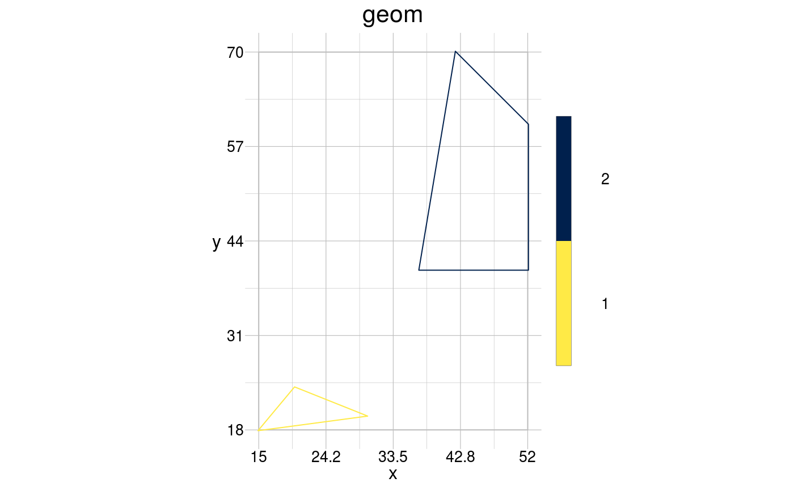
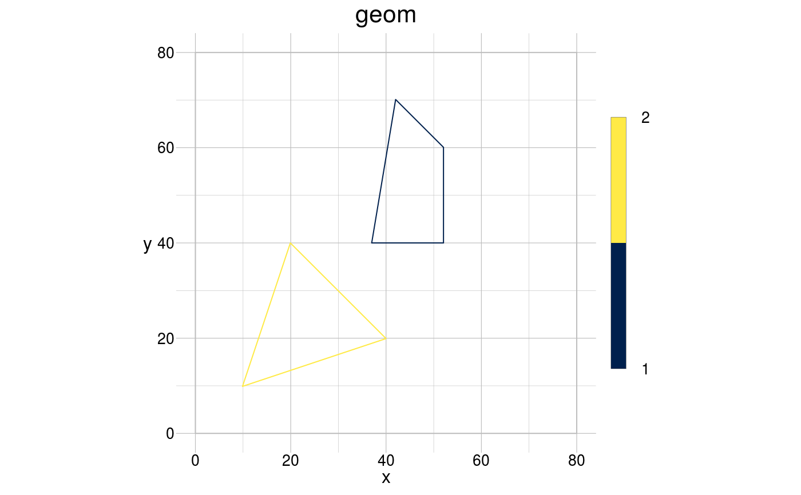

Stretch geoms by a scale factor in x and y-dimension.
gt_stretch(geom, x = NULL, y = NULL, fid = NULL, update = TRUE)
| geom | [ |
|---|---|
| x | [ |
| y | [ |
| fid | [ |
| update | [ |
Stretched geom.
Other geometry tools: gt_reflect,
gt_rotate, gt_scale,
gt_sketch, gt_skew,
gt_translate
# the original object coords <- data.frame(x = c(30, 60, 60, 40, 10, 40, 20), y = c(40, 40, 60, 70, 10, 20, 40), fid = c(1, 1, 1, 1, 2, 2, 2)) window <- data.frame(x = c(0, 80), y = c(0, 80)) aGeom <- gs_polygon(anchor = coords, window = window) # stretch several geoms visualise(geom = gt_stretch(geom = aGeom, x = list(0.5), y = list(1, 0.2)))